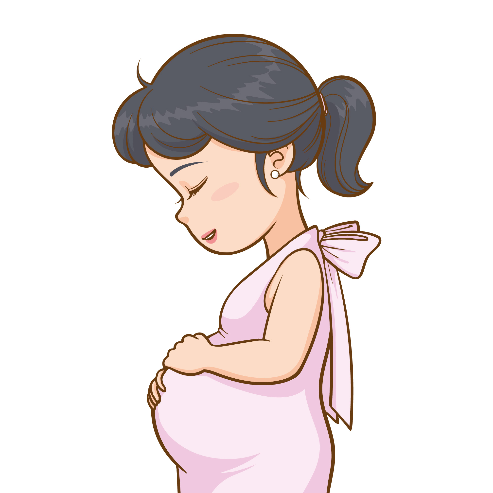
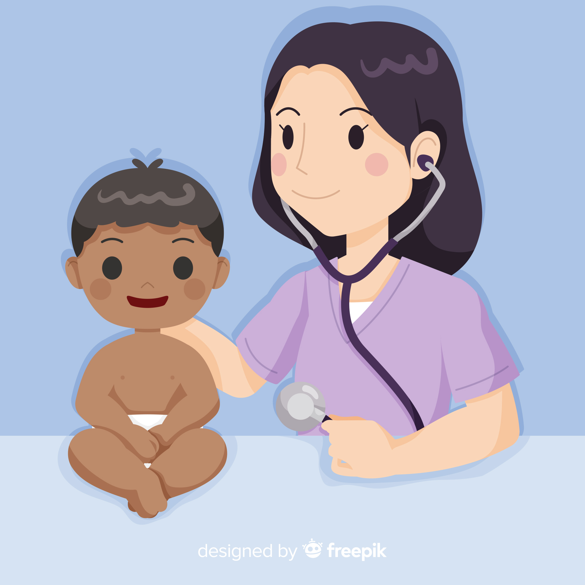
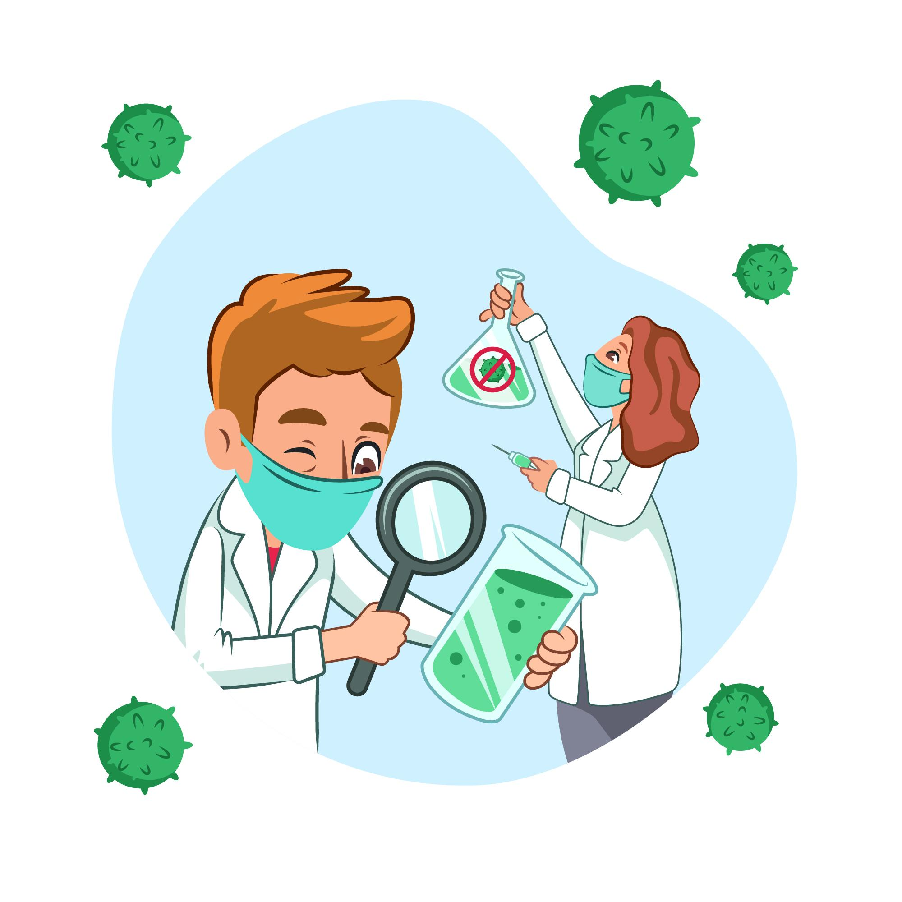
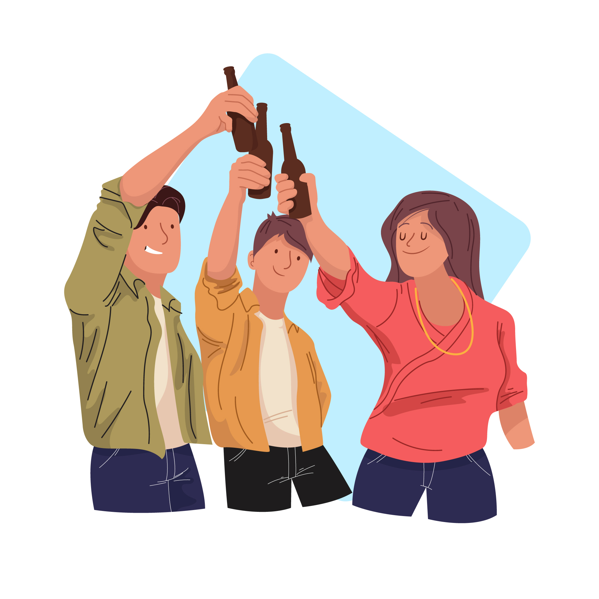
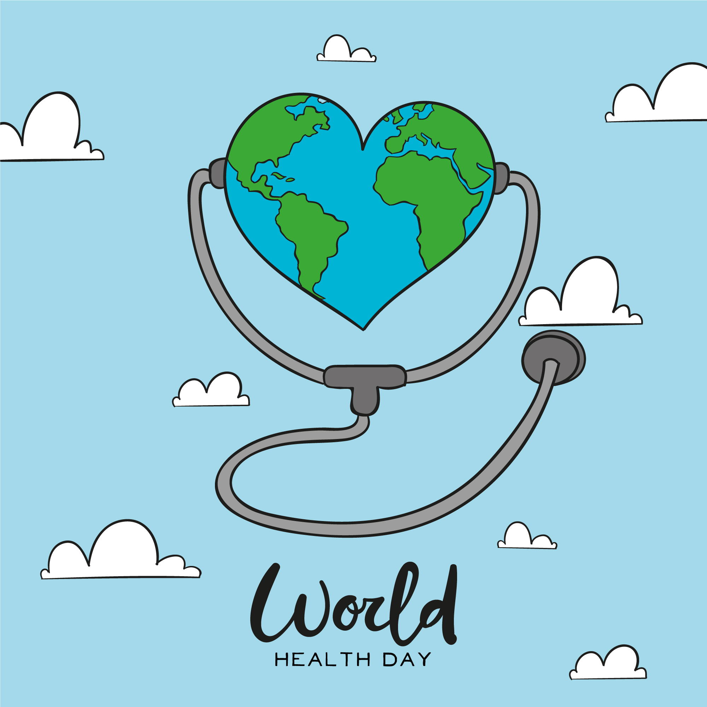
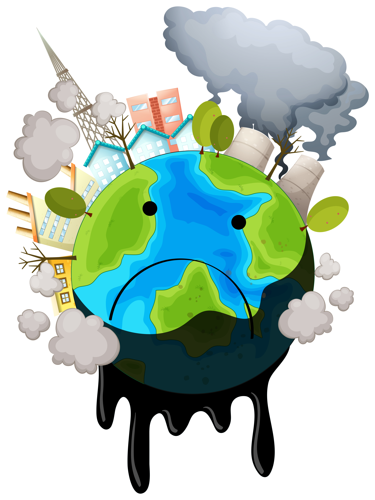

Algumas metas ODS 3 até 2030

Até 2030, reduzir a taxa de mortalidade materna global para menos de 70 mortes por 100.000 nascidos vivos;

Até 2030, acabar com as mortes evitáveis de recém-nascidos e crianças menores de 5 anos,
com todos os países objetivando reduzir a mortalidade neonatal para pelo menos 12 por 1.000 nascidos vivos
e a mortalidade de crianças menores de 5 anos para pelo menos 25 por 1.000 nascidos vivos;

Até 2030, acabar com as epidemias de AIDS, tuberculose, malária e doenças tropicais negligenciadas,
e combater a hepatite, doenças transmitidas pela água, e outras doenças transmissíveis;

Reforçar a prevenção e o tratamento do abuso de substâncias,
incluindo o abuso de drogas entorpecentes e uso nocivo do álcool;
Até 2020, reduzir pela metade as mortes e os ferimentos globais por acidentes em estradas;

Atingir a cobertura universal de saúde, incluindo a proteção do risco financeiro,
o acesso a serviços de saúde essenciais de qualidade e o acesso a medicamentos e vacinas essenciais seguros,
eficazes, de qualidade e a preços acessíveis para todos;

Até 2030, reduzir substancialmente o número de mortes e doenças por produtos químicos perigosos,
contaminação e poluição do ar e água do solo;